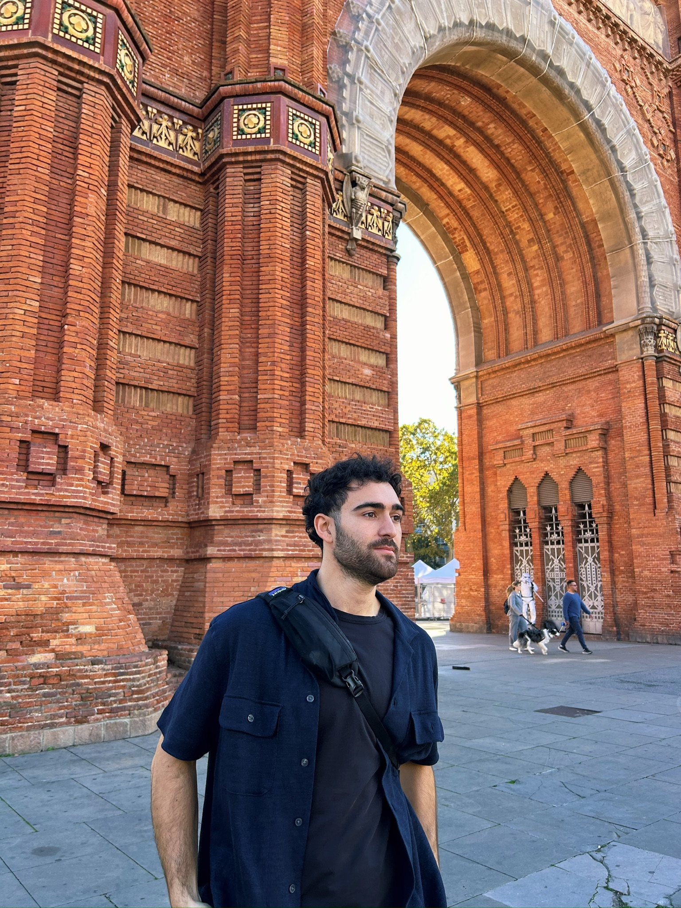

Hello! I'm Austin Gilbride, a bioinformatician in training who loves to create. I have a passion for building things, whether it's software projects, data visualizations, or even just organizing my thoughts through writing. My journey in tech started with a curiosity for how things work, and it has evolved into a full-fledged career. The majority of the things I build are for learning, and if I inspire someone else to make something as well, I will consider that a win even if my project fails.
I enjoy working with modern web technologies and frameworks, and I'm always eager to learn new skills. When I'm not trying to learn a new tech stack, you can find me exploring the outdoors or playing chess. I also like woodworking, surfing, and playing tons of soccer.